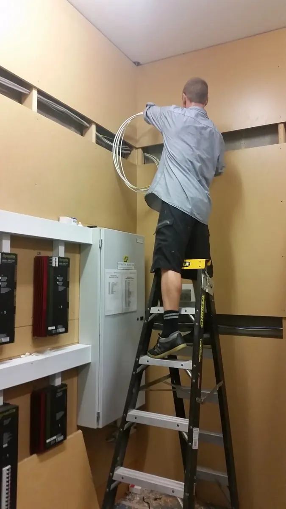
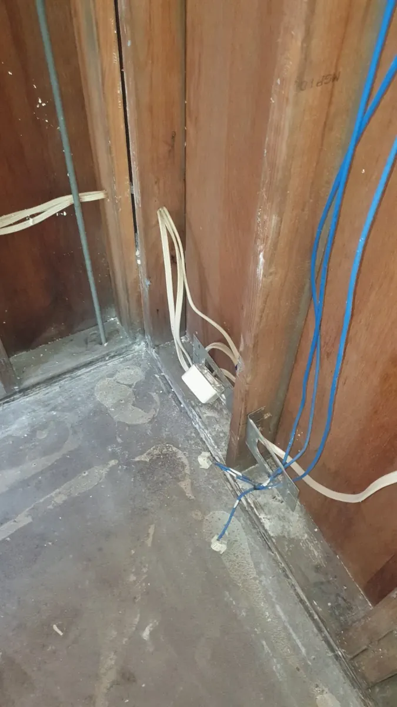
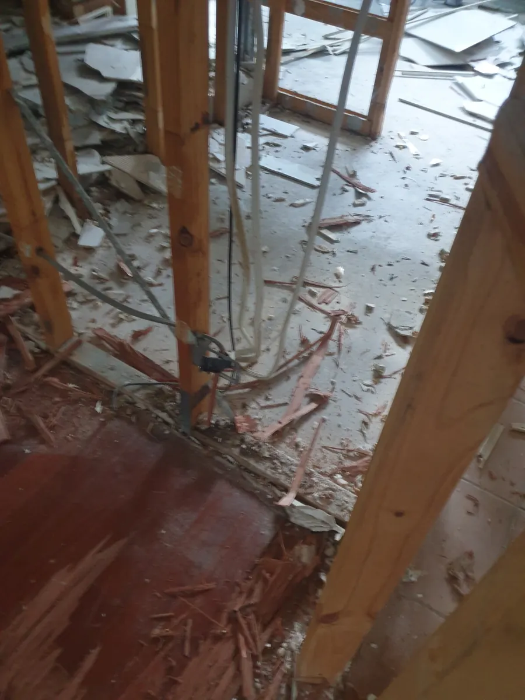

Residential Electrical Services
Household electrical work that is practical, neat and planned around how your home is used. From an additional powerpoint or fan to renovation wiring and upgrades, the scope starts with the actual installation.
Urgent electrical hazard or serious unexpected outage? Call the 24/7 emergency number directly. Availability varies with location and fault type.
What do you need done around the house?
Small jobs matter, and so does making sure a change works with the existing circuits, protection and future plans. We can help with both straightforward tasks and work requiring an on-site assessment.
Powerpoints and dedicated circuits
Additional outlets, repositioning, kitchen and laundry circuits, or power for equipment that needs suitable protection and capacity.
Lights, switching and fans
Indoor and outdoor lighting, LED upgrades, ceiling fans, controls, practical switching layouts and replacements.
Repairs and maintenance
Damaged accessories, failed lighting or unreliable electrical items. Where the cause is unknown, testing may be needed before repair costs can be confirmed.
Renovations and alterations
Electrical planning and fitting around kitchens, bathrooms, room changes and extensions, coordinated with access and other trades.
Switchboard and protection assessment
Older fuses, crowded boards or extra electrical loads may justify an assessment. Replacement is determined by the installation, not age alone.
Outdoor areas and outbuildings
Plan lighting and power for covered outdoor areas, sheds and equipment with attention to supply route, exposure, isolation and protection.
What helps us understand your electrical enquiry?
Start with the actual symptom or work required. Useful details make it easier to discuss the right next step, whether that is a diagnostic visit or a planned quote.
Several small jobs?
Combine the list in one enquiry so materials, access and time on site can be considered together.
A tripping circuit?
If the cause isn't known, choose fault finding rather than a fixed-price installation enquiry.
A larger renovation?
Share drawings, appliance positions, intended switching and rough-in timing early.
A new load?
Discuss EV charging, air conditioning or workshop equipment along with board capacity and the existing supply.
Real electrical work, not stock imagery.
These images come from actual Berryman Electrical jobs. Their specific locations have not been independently verified, so they are not presented as suburb-specific case studies.



From the first details to a clear scope.
Tell us what is needed
Describe the symptoms or proposed electrical changes, property location and access requirements.
Choose the right assessment
Unknown faults may need testing, while planned work might be scoped using photos, drawings or a site inspection.
Agree the next step
Discuss the findings, materials, any access constraints and the appropriate labour or quotation arrangements.
Complete and test
Carry out the agreed electrical work, check the installation and provide applicable electrical documentation.
Repairs, diagnostic work and planned installations are not priced the same way.
Tell us if the job is known and straightforward, or if you need the cause of a fault investigated. We confirm the applicable attendance, labour, travel and GST basis before booking where relevant. Extra materials and scope are discussed rather than assumed.
Different electrical jobs need different starting points.
Call rather than send a routine quote request.
For sparking, burning smells, significant heat damage or dangerous electrical conditions, keep clear and call directly. In immediate danger or fire, call 000.
Call 0424 157 002Residential electrical FAQs.
Can you do small residential electrical jobs?
Yes. Jobs can include replacing a damaged fitting, adding powerpoints, installing lights or fans and other domestic electrical work. Describe the scope so we can discuss the appropriate attendance.
Can I combine several electrical jobs into one visit?
Yes. Sending a complete list of jobs and safe photos can help assess time, materials and access before scheduling.
Do you install ceiling fans and outdoor lighting?
Yes. We can discuss the location, suitable equipment, controls, mounting and circuit requirements before the installation.
Can you handle electrical work during a kitchen or bathroom renovation?
Yes. Share the renovation stage, appliance and fixture plans and any trade coordination requirements. The electrical scope can then be planned around access and timing.
Do you provide a fixed quote for a tripping safety switch?
Unknown faults need investigation before the repair scope can be determined. Diagnostic attendance and any further repair are discussed as separate stages where appropriate.
Do you service homes around Byron Bay and nearby Northern Rivers?
Yes. Residential work is available across Byron Bay and nearby Northern Rivers service areas, depending on the job and current availability.
Residential electrical work across Byron Bay and nearby Northern Rivers.
We take enquiries from homes in Byron Bay, Mullumbimby, Brunswick Heads and nearby towns. The actual job, travel and availability determine whether attendance is practical.
We can help work out the right next step.
Start with the scope, suburb and safe photographs. We will discuss availability and whether assessment or a quote is appropriate.